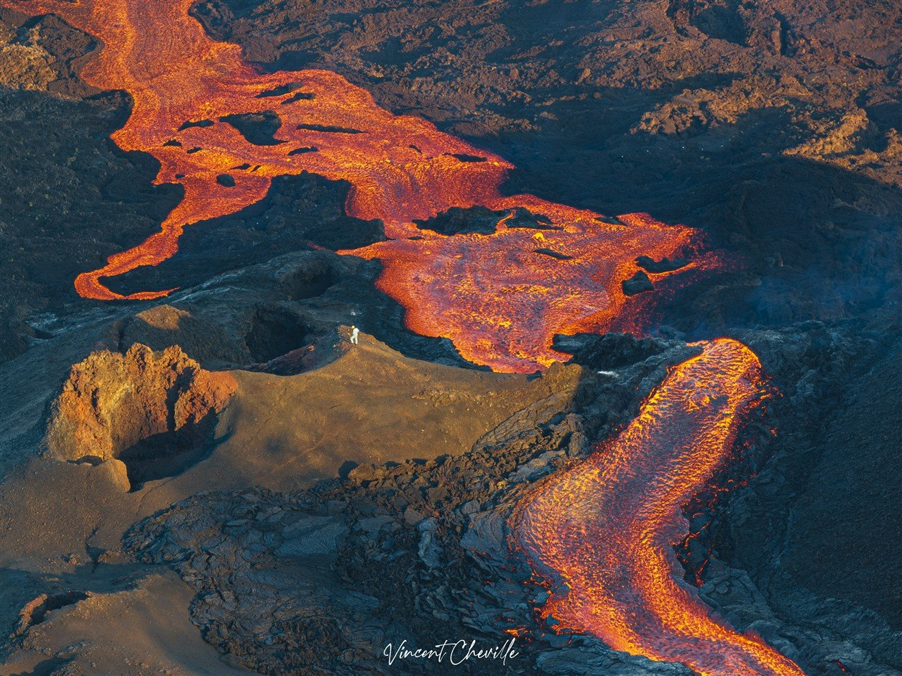
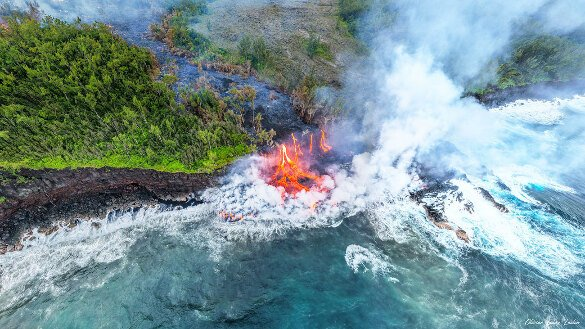
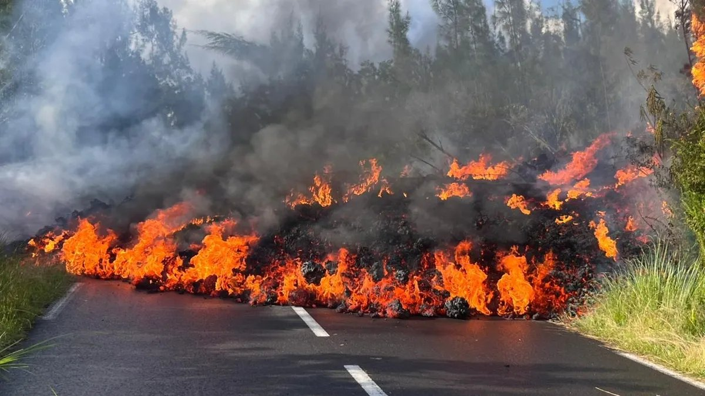

L'un des volcans les plus actifs de la planète, gardien de feu de l'île intense.
Après plus de deux ans de silence, le Piton de la Fournaise s'est réveillé le 13 février 2026. La lave a dévalé les Grandes Pentes et traversé la Route Nationale 2 le 13 mars — du jamais vu depuis 2007 — avant de plonger dans l'océan dans la nuit du 15 au 16 mars.
Début de l'éruption sur le flanc sud-sud-est, à 2 056 m d'altitude.
Trois bras de coulée franchissent la RN2 — première fois depuis 2007.
La lave atteint l'océan à 00h20. Apparition du "laze", panache gazeux corrosif.
Arrêt temporaire de l'éruption. Le trémor volcanique disparaît progressivement.
Reprise de l'éruption. La lave atteint de nouveau l'océan dès le 30 mars.
50 jours de spectacle continu. Des milliers de curieux sur la Route des Laves.



Le Piton de la Fournaise culmine à 2 632 mètres et constitue le sommet du massif volcanique qui forme 40 % de l'île de La Réunion dans sa partie sud-est. C'est un volcan bouclier : la lave coule en rivières fluides plutôt que d'exploser.
Avec une éruption en moyenne par an, c'est l'un des volcans les plus actifs de la planète. Depuis 1979, l'Observatoire Volcanologique (OVPF-IPGP) le surveille en continu grâce à des centaines de capteurs.
La plupart des éruptions se déroulent à l'intérieur de l'Enclos Fouqué, une caldeira de 8 km de diamètre. Plus rarement, les coulées atteignent les zones habitées — comme en 1977 et lors de l'éruption de 2026.
Le cratère Dolomieu mesure 1 000 m de long sur 700 m de large. Il doit son nom au géologue Déodat Gratet de Dolomieu, cité par le naturaliste Bory de Saint-Vincent lors de la première description scientifique du volcan en 1801.
En avril 2007, une éruption colossale a provoqué l'effondrement du fond du cratère à 300 mètres de profondeur, redessinant entièrement le sommet.
Chaque éruption débute par une fissure de plusieurs centaines de mètres d'où jaillit la lave en rideau de feu, avant de se concentrer en un cône.
"L'avenir du Piton de la Fournaise reste comme toujours incertain — c'est aussi cela qui le rend si fascinant."— Brandon, passionné du volcan, cité par Imaz Press
Par la fréquence de ses nouvelles éruptions, le Piton de la Fournaise tient probablement le premier rang mondial.
Depuis 1979, c'est l'un des volcans les plus instrumentés au monde : sismomètres, GPS, caméras 24h/24.
Quand la lave atteint la mer, elle produit du "laze" — un panache gazeux corrosif et spectaculaire.
Le Pas de Bellecombe donne accès à l'Enclos Fouqué. Le gîte du volcan a rouvert en novembre 2024.
Dès que les laves refroidissent, lichens puis fougères recolonisent le sol. La forêt reprend en quelques dizaines d'années.
Environ tous les 50 ans, la lave sort de l'enclos et peut atteindre des zones habitées — comme en 1977 et 2026.
L'accès se fait depuis le Pas de Bellecombe, point de départ de la descente dans l'Enclos Fouqué. Plusieurs sentiers balisés permettent d'explorer ce paysage lunaire.
Sentiers autorisés : Pas de Bellecombe → Formica Léo → Rivals → Cratère Caubet, et le point de vue sur le Dolomieu (accès nord).
En période d'éruption, l'Enclos est interdit d'accès. Toujours vérifier les infos sur le site de l'OVPF avant de partir.
Le gîte du volcan a rouvert en novembre 2024 après quatre ans de travaux. Il permet de passer la nuit au cœur du massif pour voir le lever du soleil depuis le sommet.
La Route des Laves (RN2) offre des points de vue spectaculaires lors des éruptions — des milliers de personnes s'y rassemblent.
Le survol en drone est strictement interdit par arrêté préfectoral dans toute la zone d'éruption.